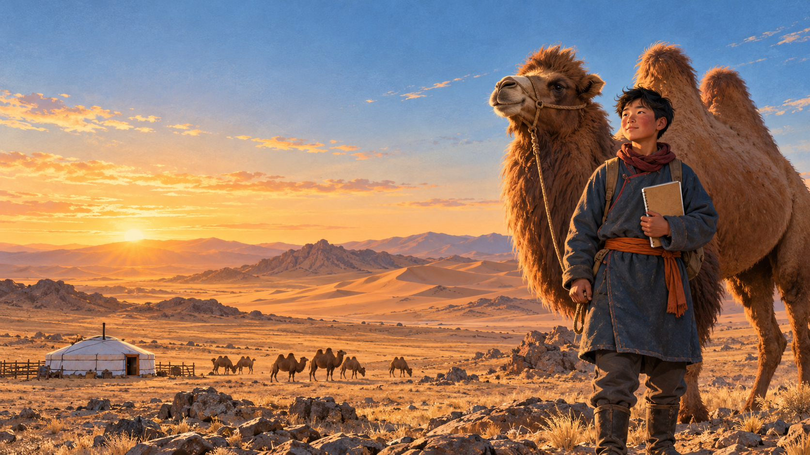
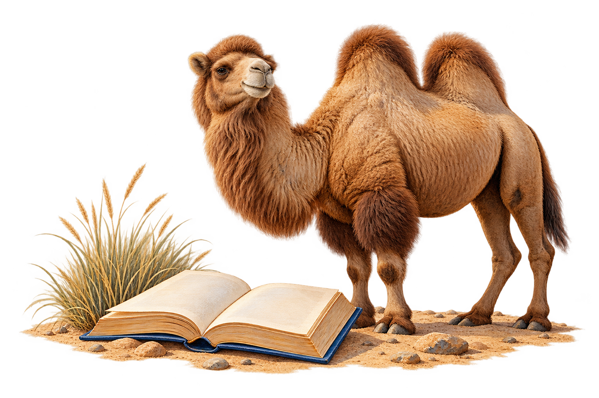
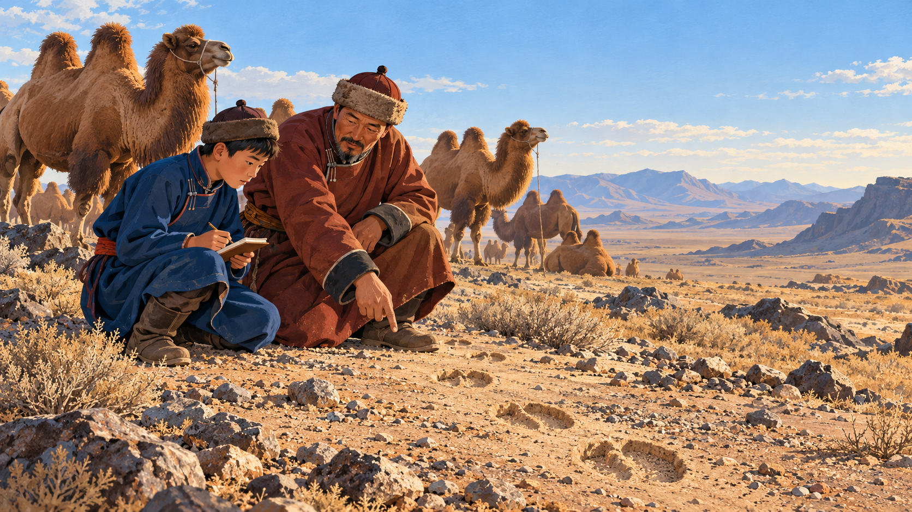
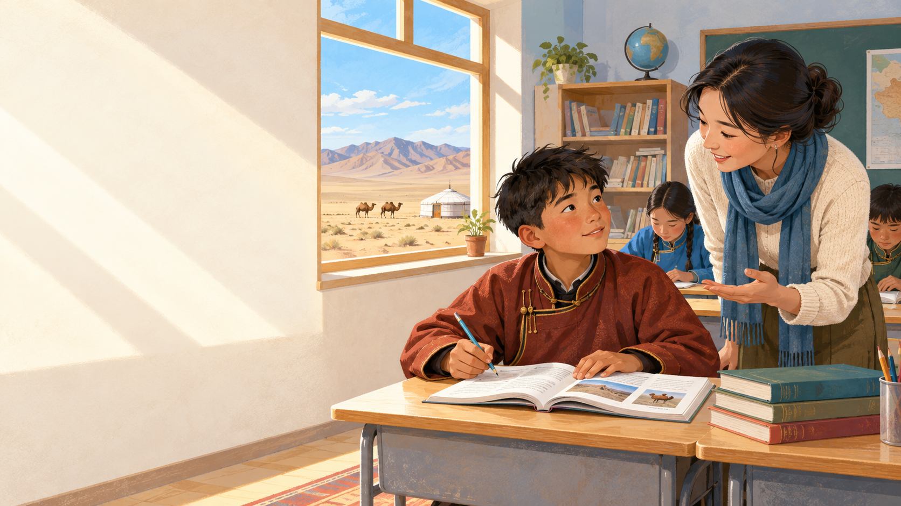
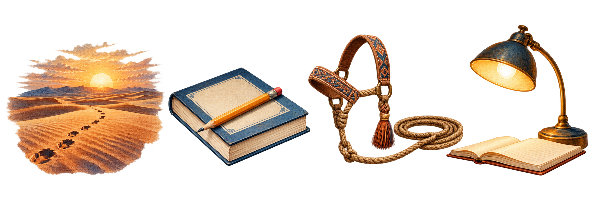
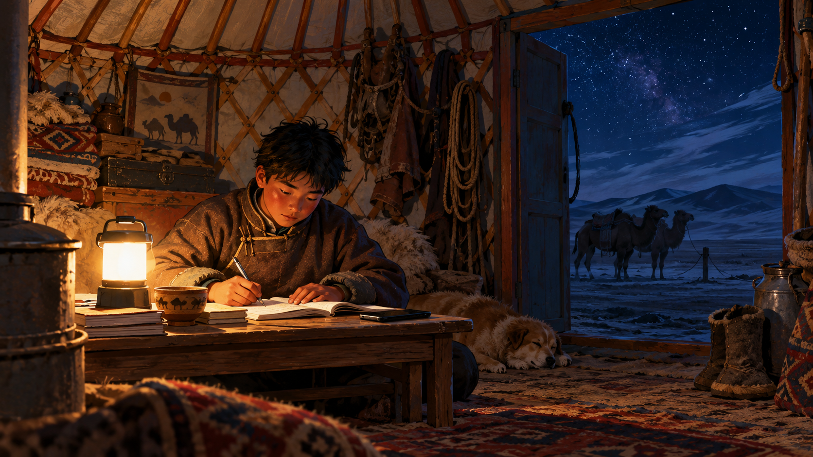
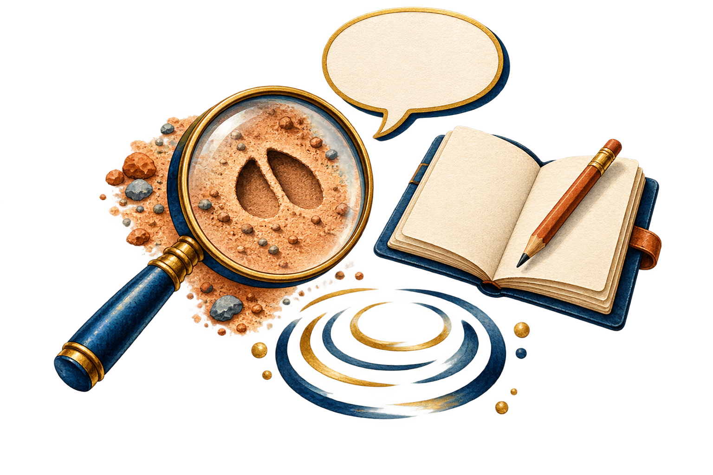
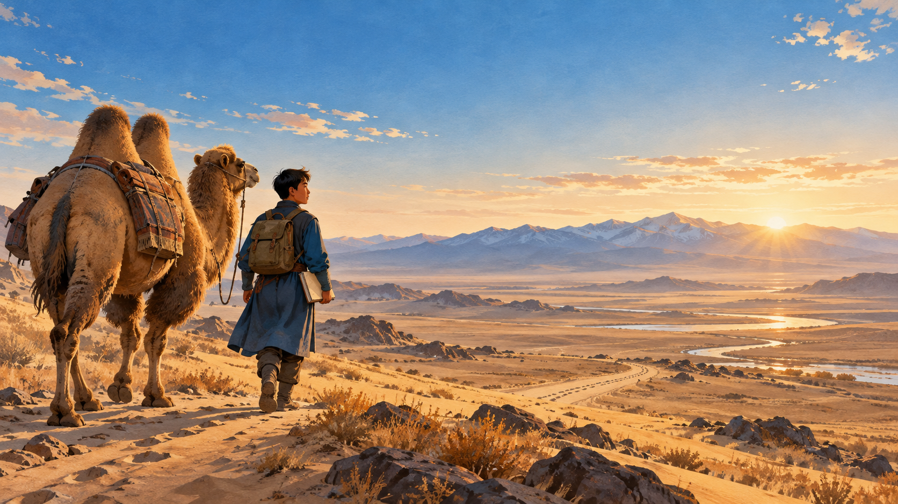
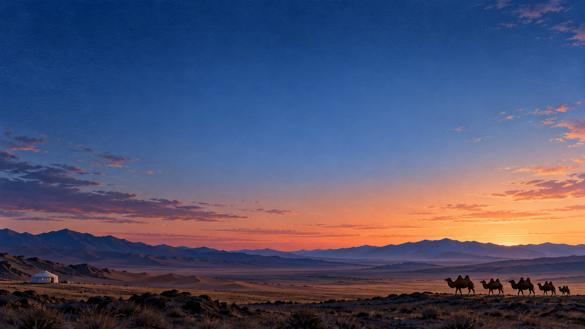

My Journey
from the Gobi
What learning means to the son of a camel-herding family
My classroom is larger than a school
I learn through lessons, daily work, and close attention to the land around me.

02
My first teachers
- My family teaches me to care for animals and finish every task.
- The weather teaches me to prepare before conditions change.
- Camels teach me patience because trust grows slowly.

Two kinds of knowledge
The strongest learning happens when I connect experience with new ideas.
From home
I read tracks, weather, and animal behaviour.
From school
I study languages, science, and the wider world.
A typical day
My day moves between family duties and study. Each part teaches a different skill.
Check the herd
I notice tracks, weather, and the health of our camels.
Study new ideas
I ask questions and connect lessons with daily life.
Help my family
Real work builds responsibility and practical judgement.
Practise English
Short, regular practice helps me make steady progress.

05
Learning takes determination
Distance and weather can change my plans, especially in winter.
Internet access is sometimes slow, so I save materials when the signal is better.
Time and energy are limited after herding work, so I study in focused sessions.
How I keep learning
I make progress when I stay curious and use knowledge in real situations.
Observe
I look closely before I make a decision.
Ask
I learn faster when I ask clear questions.
Practise
I repeat useful skills until they feel natural.
Reflect
I think about what worked and what I can improve.

07
Why English matters to me
English helps me learn from the world and tell the world about the Gobi.

My roots give me direction.
Learning gives me choices.
I want to grow without forgetting where I come from.
Thank you
Монгол ярианы бүтэн текст
Appendix · Slides 1–9
1-р слайд — Говиос эхэлсэн миний аялал
Та бүхэнд өдрийн мэнд хүргэе. Намайг Энхмэнд гэдэг. Би UFE Tech-ийн хиймэл оюуны инженерчлэлийн нэгдүгээр курсын оюутан. Өнөөдөр би говийн тэмээчин айлын хүүгийн хувьд өөрийн амьдралын туршлагад тулгуурлан суралцах тухай ярихыг хүсэж байна. Эхлэхээсээ өмнө та бүхнийг нэг асуултын талаар бодоосой гэж хүсэж байна. Бид хаанаас хамгийн их зүйлийг сурдаг вэ? Анги танхимаас уу, гэрээсээ юу, эсвэл амьдралын туршлагаасаа юу? Миний хувьд эдгээр гурав хоорондоо холбоотой. Энэ илтгэлээрээ гэр бүл, говийн амьдрал надад юу заадаг, би хэрхэн суралцдаг, мөн англи хэл миний ирээдүйд яагаад чухал болохыг тайлбарлана.
2-р слайд — Миний суралцах орчин сургуулиар хязгаарлагддаггүй
Миний суралцах орчин сургуулиар хязгаарлагддаггүй гэж хэлж байгаа нь бид олон өөр газраас мэдлэг олж авдаг гэсэн утгатай. Сургууль дээр би хичээл, ном, хэлэлцүүлгээр дамжуулан суралцдаг. Гэртээ гэр бүлийнхэндээ тусалж байхдаа суралцдаг. Харин говьд газар нутаг, цаг агаар, мал амьтнаа анхааралтай ажиглаж суралцдаг. Эдгээр өөр өөр орчин надад өдөр тутмын амьдрал ч гэсэн үнэ цэнтэй багш болж чаддагийг ойлгуулдаг.
3-р слайд — Миний анхны багш нар
Миний гэр бүлийнхэн бол миний анхны багш нар юм. Тэд надад мал амьтнаа арчлан халамжлах, эхэлсэн ажлаа дуусгах, өөрийн үйлдэлд хариуцлагатай хандахыг заадаг. Цаг агаар ч надад нэг чухал зүйлийг заадаг. Энэ нь нөхцөл байдал өөрчлөгдөхөөс өмнө бэлтгэлтэй байх хэрэгтэй гэсэн санаа юм. Өөрөөр хэлбэл, асуудал гарахыг хүлээлгүй, урьдчилан бодож төлөвлөх хэрэгтэй. Тэмээ надад тэвчээртэй байхыг заадаг. Мал амьтны итгэлийг олж авахад цаг хугацаа, зөөлөн харьцаа, халамж хэрэгтэй. Эдгээр сургамж зөвхөн мал маллахад хэрэг болдоггүй. Хариуцлага, бэлтгэл, тэвчээр нь намайг илүү сайн суралцагч болоход ч тусалдаг.
4-р слайд — Хоёр төрлийн мэдлэг
Миний амьдралд хоёр чухал төрлийн мэдлэг байдаг гэж би боддог. Нэг нь гэрээсээ олж авдаг мэдлэг, нөгөө нь сургуулиас эзэмшдэг мэдлэг юм. Гэртээ би малын мөрийг шинжих, цаг агаарын өөрчлөлтийг анзаарах, мал амьтны зан авирыг таньж ойлгоход суралцдаг. Харин сургуульд хэл, шинжлэх ухаан болон дэлхий ертөнцийн тухай шинэ ойлголтуудыг судалдаг. Энэ хоёр төрлийн мэдлэг бие биеэ нөхдөг гэж би үздэг. Амьдралын туршлага надад бодит жишээ өгдөг бол боловсрол аливаа зүйл яагаад тийм байдгийг ойлгоход тусалдаг. Би энэ хоёрыг холбож чадсан үедээ хамгийн сайн суралцдаг.
5-р слайд — Миний нэг өдөр
Энэ слайд өдрийн өөр өөр үйл ажиллагаа хэрхэн суралцах боломж болж болохыг харуулж байна. Сүргээ эргэх нь миний ажиглах чадварыг хөгжүүлдэг. Би малынхаа биеийн байдал болон хүрээлэн буй орчныг анзаарах хэрэгтэй болдог. Хичээлийн үеэр би асуулт асууж, шинэ ойлголтыг өмнө нь мэддэг байсан зүйлтэйгээ холбодог. Гэр бүлийнхэндээ туслах нь хариуцлагатай байх, бодит нөхцөлд зөв шийдвэр гаргах чадварыг хөгжүүлдэг. Харин англи хэлээ давтах нь өөр нэг чадвараа сайжруулах боломж өгдөг. Богино хугацаагаар ч гэсэн тогтмол хичээллэх нь урагшлахад тусалж чадна. Эдгээр үйл ажиллагаа бүр надад өөр өөр зүйлийг заадаг.
6-р слайд — Суралцахад тууштай байдал хэрэгтэй
Гэхдээ суралцах нь үргэлж амар байдаггүй. Говьд хол зай, цаг агаарын хүндрэл төлөвлөгөөнд нөлөөлж болно. Ялангуяа өвлийн улиралд энэ нь илүү мэдрэгддэг. Интернэт ч удаан байх тохиолдол бий. Үүнийг шийдэх нэг арга бол сүлжээ сайн үед хичээлийн материалаа татаж хадгалах юм. Өөр нэг бэрхшээл бол малын ажлын дараа суралцах цаг зав, эрч хүч гаргах явдал. Тиймээс тодорхой хугацаанд анхаарлаа төвлөрүүлж хичээллэх нь үр дүнтэй байдаг. Эдгээр бэрхшээл надад ажлаа сайн төлөвлөх, байгаа боломжоо ашиглахыг заадаг. Миний хувьд тууштай байна гэдэг нь нөхцөл хэцүү байсан ч суралцахаа үргэлжлүүлэхийг хэлнэ.
7-р слайд — Би хэрхэн үргэлжлүүлэн суралцдаг вэ?
Миний суралцах арга дөрвөн энгийн алхамтай. Эдгээр нь ажиглах, асуух, дадлага хийх, эргэцүүлэн дүгнэх юм. Нэгдүгээрт, би шийдвэр гаргахаасаа өмнө анхааралтай ажигладаг. Хоёрдугаарт, ямар нэг зүйлийг ойлгоогүй үедээ тодорхой асуулт асуудаг. Гуравдугаарт, тухайн чадварыг өөртөө хэвшүүлэх хүртлээ давтан хийж, дадлагаждаг. Эцэст нь би хийсэн зүйлээ эргэцүүлэн дүгнэдэг. Юу сайн болсон бэ? Юу хэцүү байсан бэ? Дараагийн удаа юуг өөрчлөх хэрэгтэй вэ? гэж өөрөөсөө асуудаг. Би энэ аргыг өдөр тутмын ажил, хичээл болон англи хэл сурахдаа ашиглаж чадна. Энэ нь туршлагаасаа суралцаж, ахиц гаргахад тусалдаг.
8-р слайд — Англи хэл надад яагаад чухал вэ?
Англи хэл миний говийн амьдралыг дэлхий ертөнцтэй холбодог учраас надад чухал. Англи хэлтэй болсноор би илүү олон ном, видео, цахим хичээл ашиглах боломжтой. Мөн хиймэл оюуны инженерчлэлийн оюутны хувьд мэргэжлийн ойлголтуудыг англи хэлээр судалж, ойлгодог болохыг хүсдэг. Англи хэл өөр өөр орны хүмүүстэй харилцахад тусалдаг. Үүний зэрэгцээ гэр бүл, тэмээ, соёлынхоо тухай бусдад ярьж өгөх боломж олгодог. Би дэлхий ертөнцөөс суралцахын зэрэгцээ бусдад өөрийн нутаг, амьдралыг ойлгуулахыг хүсдэг.
9-р слайд — Уг үндэс минь надад чиг баримжаа өгдөг. Суралцах нь надад сонголт хийх боломж олгодог.
Илтгэлээ дүгнэж хэлэхэд, гэр бүл, говийн амьдрал надад тэвчээртэй, хариуцлагатай байх, амьдралын туршлагыг үнэлэх зэрэг чухал үнэт зүйлсийг өгсөн. Харин боловсрол надад шинэ мэдлэг, ирээдүйн илүү олон сонголтыг өгдөг. Тиймээс би “Уг үндэс минь надад чиг баримжаа өгдөг. Суралцах нь надад сонголт хийх боломж олгодог” гэж хэлж байгаа юм. Би хаанаас гаралтайгаа санаж, уг үндсээ эрхэмлэхийн зэрэгцээ хөгжиж, шинэ боломжуудыг нээж, чадвараа сайжруулахыг хүсдэг. Анхаарал тавьж сонссон та бүхэнд баярлалаа. Асуулт байвал дуртайяа хариулъя.
Full English Presentation Script
Appendix · Slides 1–9
Slide 1 — My Journey from the Gobi
Good afternoon, everyone. My name is Enkhmend, and I am a first-year AI engineering student at UFE Tech. Today, I would like to talk about learning through my own background as the son of a camel-herding family in the Gobi. Before I begin, think about this question: Where do we learn the most—in a classroom, at home, or through experience? For me, all three are connected. In this presentation, I will explain what my family and the Gobi teach me, how I learn, and why English matters to my future.
Slide 2 — My Classroom Is Larger Than a School
When I say that my classroom is larger than a school, I mean that learning happens in many places. At school, I learn through lessons, books, and discussions. At home, I learn by helping my family. In the Gobi, I learn by paying attention to the land, the weather, and the animals. These different environments help me understand that everyday life can also be a valuable teacher.
Slide 3 — My First Teachers
My family members are my first teachers. They teach me to care for animals, complete my tasks, and take responsibility for my actions. The weather also teaches me an important lesson: I need to prepare before conditions change. This means thinking ahead instead of waiting until a problem appears. Camels teach me patience. Building trust with an animal takes time and gentle care. These lessons are useful beyond herding. Responsibility, preparation, and patience also help me become a better student.
Slide 4 — Two Kinds of Knowledge
I see two important kinds of knowledge in my life: knowledge from home and knowledge from school. At home, I learn to understand animal tracks, notice changes in the weather, and recognise animal behaviour. At school, I study languages, science, and ideas about the wider world. I believe these two kinds of knowledge support each other. Experience gives me practical examples, while education helps me understand why things happen. I learn best when I connect the two.
Slide 5 — A Typical Day
This slide shows how different parts of a day can become opportunities to learn. Checking the herd develops my observation skills. I need to notice the condition of the animals and the environment around them. During lessons, I ask questions and connect new ideas with things I already know. Helping my family develops responsibility and practical judgement. Finally, practising English gives me a chance to improve another skill. Even a short period of regular practice can help me move forward. Each activity teaches me something different.
Slide 6 — Learning Takes Determination
However, learning is not always easy. In the Gobi, long distances and difficult weather can affect plans, especially in winter. Internet access can also be slow. One practical solution is to download and save learning materials when the connection is better. Another challenge is finding enough time and energy after herding work. That is why focused study sessions are useful. These challenges teach me to plan carefully and use the opportunities I have. For me, determination means continuing to learn even when the conditions are difficult.
Slide 7 — How I Keep Learning
My learning method has four simple steps: observe, ask, practise, and reflect. First, I observe carefully before making a decision. Second, I ask clear questions when I do not understand something. Third, I practise until the skill becomes more natural. Finally, I reflect. I ask myself: What worked well? What was difficult? What should I change next time? I can use this method for practical tasks, school subjects, and English. It helps me turn experience into progress.
Slide 8 — Why English Matters to Me
English is important to me because it connects my life in the Gobi with the wider world. It allows me to use more books, videos, and online lessons. As an AI engineering student, I also want to use English to understand technical ideas. English helps me communicate with people from different countries. At the same time, it gives me a way to share stories about my family, our camels, and our culture. I want to learn from the world and help the world understand my home.
Slide 9 — My Roots Give Me Direction. Learning Gives Me Choices.
To conclude, my family and the Gobi have given me important values, including patience, responsibility, and respect for experience. Education gives me new knowledge and more choices for the future. That is why I say: “My roots give me direction. Learning gives me choices.” I want to grow, explore new opportunities, and develop my skills while remembering where I come from. Thank you for listening. I would be happy to answer any questions.